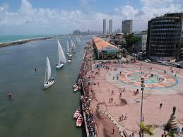

Eventos: A praça é palco de diversas manifestações culturais, como shows, apresentações de dança e teatro.
Instituto Ricardo Brennand: Museu de arte popular brasileira, com acervo de mais de 6 mil peças
Eventos: A praça é palco de diversas manifestações culturais, como shows, apresentações de dança e teatro. Instituto Ricardo Brennand: Museu de arte popular brasileira, com acervo de mais de 6 mil peças
Eventos: A praça é palco de diversas manifestações culturais, como shows, apresentações de dança e teatro.
Instituto Ricardo Brennand: Museu de arte popular brasileira, com acervo de mais de 6 mil peças